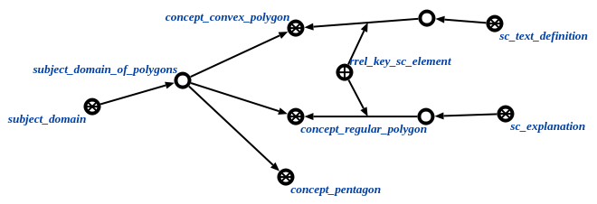

Команда проверки наличия определения или пояснения у понятия
предназначена для обнаружения понятий из заданной предметной области, которые не имеют определения либо пояснения. Единственным аргументом команды является предметная область, понятия которой надо проверить на наличие определения или пояснения. Результатом выполнения запроса является множество понятий, в которых нет ни пояснения, ни определения:
